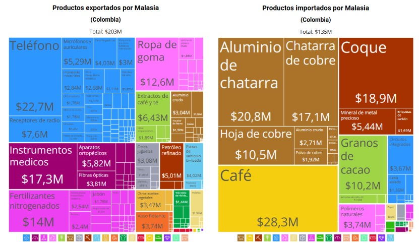

Indonesia y Malasia presentan una fuerte influencia del islam en su cultura y comportamiento social. Indonesia tiene una poblaci?n musulmana del 87,1%, mientras que en Malasia el islam sun? representa el 63,5%, acompa?ado de mayor diversidad religiosa como budismo y cristianismo. La religi?n influye directamente en h?bitos de consumo, normas sociales y decisiones comerciales, especialmente en temas relacionados con servicios financieros y seguros.
Para ASOCAVAL, comprender estas creencias es fundamental para adaptar la comunicaci?n y generar confianza en el mercado. En ambos pa?ses, el respeto por normas culturales y religiosas puede facilitar relaciones comerciales y aceptaci?n de los servicios. Sin embargo, Indonesia exige mayor adaptaci?n debido a su homogeneidad religiosa, mientras Malasia ofrece un entorno m?s diverso y flexible.
Fuente completa: Wikipedia contributors. (s.f.). Religion in Malaysia. En Wikipedia, The Free Encyclopedia. Recuperado el 10 de mayo de 2026, de Wikipedia - Religion in Malaysia
https://en.wikipedia.org/wiki/Religion_in_Malaysia
Idioma
El idioma oficial de Malasia es el malayo, mientras que en Indonesia se utiliza el indonesio, lengua derivada del malayo. Aunque ambos idiomas son similares, existen diferencias culturales y ling??sticas que influyen en la comunicaci?n empresarial y comercial. En Malasia el ingl?s tiene una presencia m?s amplia en negocios y servicios internacionales, facilitando las relaciones con empresas extranjeras.
Para Asocaval, la similitud entre ambos idiomas representa una ventaja para adaptar estrategias comerciales en los dos mercados con menores costos de traducci?n y comunicaci?n. Sin embargo, Malasia ofrece un entorno m?s favorable debido al mayor uso del ingl?s, lo que facilita negociaciones, publicidad y atenci?n al cliente internacional. En Indonesia puede requerirse una adaptaci?n m?s espec?fica del lenguaje y contenido comercial para generar confianza en el consumidor local.
Fuente completa: Wikipedia contributors. (s.f.). Idiomas de Indonesia. En Wikipedia, La enciclopedia libre. Recuperado el 10 de mayo de 2026, de Wikipedia - Idiomas de Indonesia
https://es.wikipedia.org/wiki/Lenguas_de_Indonesia
Crecimiento poblacional
Malasia presenta un crecimiento poblacional estable cercano al 1,2% entre 2021 y 2024, mientras Indonesia registra niveles menores entre 0,7% y 0,8%. Esto indica que Malasia mantiene una expansi?n demogr?fica m?s constante, lo que favorece el aumento gradual de consumidores y fuerza laboral. Indonesia, aunque tiene un crecimiento m?s bajo, contin?a siendo un mercado amplio por el tama?o total de su poblaci?n.
Para Asocaval, un crecimiento poblacional estable representa mayores oportunidades de ampliar la demanda de servicios y fortalecer la presencia en el mercado a largo plazo. Malasia ofrece mejores perspectivas de crecimiento sostenido del mercado, mientras Indonesia puede requerir estrategias m?s enfocadas en segmentos espec?ficos debido a su desaceleraci?n demogr?fica. Sin embargo, ambos pa?ses mantienen potencial comercial por el tama?o y dinamismo de sus econom?as.
Malasia:★★★★★Indonesia:★★★★☆
Fuente completa: The World Bank. (s.f.). World Bank Open Data. Recuperado el 10 de mayo de 2026, de World Bank Open Data
https://data.worldbank.org/
Entorno Político y Legal
Eficiencia Gubernamental
La Eficiencia Gubernamental eval?a la calidad de los servicios p?blicos y la credibilidad de las pol?ticas de Estado. Malasia mantiene un desempe?o superior y consolidado, mientras Indonesia muestra la mejora m?s acelerada de la regi?n.
Para ASOCAVAL, esta comparativa define su estrategia: Malasia ofrece un entorno de alta predictibilidad para establecer un "hub" log?stico, facilitando la validaci?n ?gil de certificaciones org?nicas. En Indonesia, la creciente eficiencia reduce progresivamente las barreras burocr?ticas y costos ocultos en aduanas. Para la asociaci?n de Valdivia, contar con gobiernos efectivos en ambos destinos garantiza que el cacao "fino y de aroma" no sufra deterioros por tr?mites lentos. Esta solidez institucional protege el esfuerzo de las 74 familias, asegurando que el cumplimiento de los est?ndares de Comercio Justo sea reconocido y procesado sin trabas administrativas en el mercado asi?tico.
El World Risk Index (WRI) eval?a el riesgo de desastres mediante la exposici?n a amenazas naturales y la capacidad institucional de respuesta. Indonesia presenta una exposici?n muy alta debido a su actividad s?smica y monzones, mientras que Malasia enfrenta un riesgo medio-alto concentrado en inundaciones estacionales.
Para ASOCAVAL, este panorama exige una log?stica preventiva: el cacao "fino y de aroma" de Valdivia es vulnerable a la humedad extrema derivada de estos fen?menos. No obstante, la alta capacidad de respuesta en ambos pa?ses, especialmente la infraestructura resiliente de Malasia, mitiga el riesgo de p?rdida de calidad. Para las 74 familias de la asociaci?n, esto implica que, aunque existen amenazas ambientales, los puertos en estos destinos est?n preparados para mantener la continuidad operativa. La estrategia de internacionalizaci?n debe priorizar el almacenamiento en zonas seguras para preservar las certificaciones org?nicas y de Comercio Justo frente a contingencias clim?ticas.
Fuente completa: Silva, E. S., et al. (2023). [T?tulo del art?culo no disponible en el enlace proporcionado]. Science of The Total Environment (o revista correspondiente). ScienceDirect - art?culo S2590061723000236
https://www.sciencedirect.com/science/article/pii/S2590061723000236
Riesgo Político
El Riesgo Político eval?a la estabilidad institucional y la capacidad de un gobierno para implementar pol?ticas p?blicas eficaces. Malasia ha superado una fase de volatilidad (cuatro gobiernos en cinco a?os) consolidando una estabilidad s?lida con el gobierno de unidad de Anwar Ibrahim y su plan "Econom?a Madani". Por su parte, Indonesia muestra una mejora constante en eficiencia administrativa y un entorno de negocios receptivo para la inversi?n extranjera.
Para ASOCAVAL, este panorama binacional es altamente favorable para la exportaci?n de cacao fino y de aroma. La estabilidad malaya reduce el riesgo de cambios repentinos en aranceles, mientras que la creciente eficiencia en Indonesia facilita la validaci?n de certificaciones de Comercio Justo y Org?nicas. Para las 74 familias de Valdivia, estos mercados representan destinos seguros donde el marco legal protege los contratos comerciales, permitiendo que el cacao de desarrollo alternativo compita en igualdad de condiciones en el Sudeste Asi?tico.
Malasia presenta altos niveles de conectividad digital, pasando de aproximadamente 90% de usuarios de internet en 2020 a cerca del 98% en 2024. Indonesia muestra un crecimiento importante, aumentando de 54% a 73% en el mismo periodo. Esto evidencia que ambos pa?ses avanzan en digitalizaci?n, aunque Malasia mantiene una infraestructura tecnol?gica y acceso a internet m?s desarrollado.
Para Asocaval, una mayor conectividad facilita estrategias digitales, promoci?n de servicios, comunicaci?n con clientes y procesos en l?nea. Malasia ofrece un entorno m?s favorable para implementar plataformas digitales y ampliar cobertura comercial con menor dificultad, Indonesia representa una oportunidad de crecimiento debido al aumento acelerado de usuarios digitales, aunque todav?a existen limitaciones de acceso en algunas zonas.
Malasia:★★★★★Indonesia:★★★★☆
Fuente completa: The World Bank. (s.f.). World Bank Open Data. Recuperado el 10 de mayo de 2026, de World Bank Open Data
https://data.worldbank.org/
Ubicación
Malasia e Indonesia se encuentran en el sudeste asi?tico, una regi?n estrat?gica para el comercio internacional por su conexi?n con mercados como China, India y Jap?n. Sin embargo, al exportar desde Colombia, la distancia geogr?fica representa mayores tiempos y costos log?sticos en comparaci?n con mercados m?s cercanos. Indonesia, al ser un archipi?lago, puede generar mayores dificultades de distribuci?n interna y transporte entre islas. Malasia, por su ubicaci?n m?s conectada con rutas comerciales internacionales, facilita la movilidad de mercanc?as y el acceso a puertos estrat?gicos.
Para Asocaval, la ubicaci?n de ambos pa?ses ofrece acceso a un mercado asi?tico amplio y en crecimiento. No obstante, Malasia presenta ventajas log?sticas y de conectividad que reducen costos operativos y facilitan la entrada comercial. Indonesia ofrece un mercado grande, pero con mayores retos de distribuci?n y coordinaci?n log?stica.
Malasia:★★★★★Indonesia:★★★★☆
Fuente completa: Google. (s.f.). Google Maps. Recuperado el 10 de mayo de 2026, de Google Maps
https://www.google.com/maps
Clima
Malasia e Indonesia presentan climas tropicales con temperaturas c?lidas durante todo el a?o, entre 22 ?C y 33 ?C. Estas condiciones favorecen actividades comerciales continuas y reducen riesgos asociados a cambios extremos de clima. Sin embargo, ambos pa?ses registran altos niveles de humedad y temporadas de lluvias intensas, especialmente Indonesia por su clima tropical ecuatorial.
Para Asocaval, el clima no representa una barrera fuerte para la exportaci?n de servicios, pero s? puede influir en operaciones log?sticas y transporte. Las lluvias intensas o fen?menos clim?ticos pueden generar retrasos en movilidad y distribuci?n. Malasia presenta condiciones ligeramente m?s estables y predecibles, facilitando la operaci?n comercial. Indonesia, aunque mantiene un clima similar, puede enfrentar mayores dificultades por su geograf?a insular y lluvias frecuentes.
Malasia:★★★★★Indonesia:★★★★☆
Fuente completa: Clima y Viajes. (s.f.). Clima en Malasia: temperatura, lluvia, cu?ndo ir. Recuperado el 10 de mayo de 2026, de Clima y Viajes - Clima en Malasia
https://www.climasyviajes.com/clima/malasia
Fuente completa: Clima y Viajes. (s.f.). Clima en Indonesia: temperatura, lluvia, cu?ndo ir. Recuperado el 10 de mayo de 2026, de Clima y Viajes - Clima en Indonesia
https://www.climasyviajes.com/clima/indonesia
Entorno de Comercio Internacional
Evolución de la balanza comercial entre Colombia y los países seleccionados
El indicador de balanza comercial muestra la diferencia entre exportaciones e importaciones entre Colombia y los pa?ses analizados, permitiendo evaluar el nivel de intercambio comercial y oportunidades de mercado. Seg?n la gr?fica, tanto con Malasia como con Indonesia existe una din?mica comercial creciente entre 2020 y 2022, aunque posteriormente se observa una desaceleraci?n, especialmente con Malasia. Indonesia mantiene un comportamiento m?s estable hacia 2024, lo que evidencia una relaci?n comercial m?s s?lida y sostenible. Para ASOCAVAL, este entorno es relevante porque refleja oportunidades para exportar cacao y derivados hacia mercados asi?ticos con demanda creciente de productos agr?colas y sostenibles. Adem?s, una balanza comercial activa facilita alianzas, acceso a compradores internacionales y expansi?n comercial. Sin embargo, la disminuci?n posterior a 2022 evidencia riesgos asociados a cambios econ?micos y competencia internacional.
El ?ndice de Desempe?o Log?stico (LPI) eval?a la eficiencia de un pa?s en infraestructura, transporte, aduanas y tiempos de entrega para el comercio internacional. Seg?n la gr?fica, Malasia presenta un desempe?o log?stico superior y m?s estable que Indonesia, con puntajes cercanos a 3,5, mientras Indonesia mantiene niveles moderados alrededor de 3,0. Adem?s, ambos pa?ses cuentan con puertos y aeropuertos estrat?gicos que facilitan el comercio global, especialmente con Asia y Estados Unidos. Para ASOCAVAL, este indicador es clave porque una log?stica eficiente reduce costos, tiempos de entrega y riesgos en exportaciones de cacao. Malasia ofrece mayores ventajas competitivas por su infraestructura m?s desarrollada, mientras Indonesia representa una alternativa importante por su conectividad regional y cercan?a a mercados asi?ticos. En general, el entorno log?stico favorece el proceso de internacionalizaci?n de la empresa.
Malasia:★★★★★Indonesia:★★★★☆
Aeropuerto Principal
Fuente completa: Wikipedia contributors. (s.f.). Aeropuerto Internacional de Kuala Lumpur. En Wikipedia, La enciclopedia libre. Recuperado el 10 de mayo de 2026, de Wikipedia - Aeropuerto Internacional de Kuala Lumpur
https://es.wikipedia.org/wiki/Aeropuerto_Internacional_de_Kuala_Lumpur
Fuente completa: Wikipedia contributors. (s.f.). Aeropuerto Internacional Soekarno-Hatta. En Wikipedia, La enciclopedia libre. Recuperado el 10 de mayo de 2026, de Wikipedia - Aeropuerto Internacional Soekarno-Hatta
https://es.wikipedia.org/wiki/Aeropuerto_Internacional_Soekarno-Hatta
Puerto Principal
Fuente completa: SeaRates. (s.f.). Los 22 puertos m?s grandes de Malasia: la lista completa. Recuperado el 10 de mayo de 2026, de SeaRates - Puertos m?s grandes de Malasia
https://www.searates.com/es/maritime/malaysia
Fuente completa: Hongocean. (s.f.). Los 5 puertos m?s activos de Indonesia en 2025. Recuperado el 10 de mayo de 2026, de Hongocean - Los 5 puertos m?s activos de Indonesia en 2025
https://hongocean.com/es/busiest-ports-in-indonesia/
Destinos Frecuentes
Fuente completa: Observatory of Economic Complexity. (s.f.). Indonesia (IDN) Exportaciones, Importaciones y Socios Comerciales. Recuperado el 10 de mayo de 2026, de OEC - Indonesia (IDN) Exportaciones, Importaciones y Socios Comerciales
https://oec.world/es/profile/country/idn
Fuente completa: The World Bank. (s.f.). ?ndice de desempe?o log?stico: Total (de 1 = bajo a 5 = alto) - Malaysia. En World Bank Open Data. Recuperado el 10 de mayo de 2026, de World Bank Data - ?ndice de desempe?o log?stico de Malasia
https://datos.bancomundial.org/indicator/LP.LPI.OVRL.XQ?locations=MY
Fuente completa: The World Bank. (s.f.). ?ndice de desempe?o log?stico: Total (de 1 = bajo a 5 = alto) - Indonesia. En World Bank Open Data. Recuperado el 10 de mayo de 2026, de World Bank Data - ?ndice de desempe?o log?stico de Indonesia
https://datos.bancomundial.org/indicator/LP.LPI.OVRL.XQ?locations=ID
Evoluci?n de la Balanza Comercial entre Colombia y los pa?ses seleccionados
El indicador de acuerdos comerciales muestra el nivel de cooperaci?n econ?mica entre pa?ses y las facilidades para el intercambio internacional de bienes y servicios. Seg?n la gr?fica, Colombia y Malasia cuentan con un acuerdo comercial vigente desde 1995, lo que favorece las relaciones econ?micas y comerciales entre ambos pa?ses. Este tipo de acuerdos facilita procesos de exportaci?n, reduce barreras comerciales y genera mayor seguridad jur?dica para las empresas. Para ASOCAVAL, representa una ventaja importante en su proceso de internacionalizaci?n, ya que podr?a facilitar el ingreso de cacao y derivados al mercado asi?tico con menores obst?culos comerciales y mayores oportunidades de negocio
Malasia:★★★★★Indonesia:★★★☆☆
Fuente completa: Ley 431 de 1998. (1998). Por la cual se dictan normas en materia de seguros y se establecen otras disposiciones. Recuperado el 10 de mayo de 2026, de Sistema Único de Informaci?n Normativa - Ley 431 de 1998
https://www.suin-juriscol.gov.co/viewDocument.asp?ruta=Leyes%2F1832832
Fuente completa: Ministerio de Comercio, Industria y Turismo. (s.f.). Vigente. En Tratados de Libre Comercio (TLC). Recuperado el 10 de mayo de 2026, de TLC Colombia - Acuerdos vigentes
https://www.tlc.gov.co/acuerdos/vigente
Entorno de inversión Extranjera
Flujos de inversión

Los flujos de inversi?n en estos pa?ses, se nota que tanto Indonesia como Malasia son opciones muy buenas para que ASOCAVAL crezca, pero cada uno funciona distinto. En Indonesia la inversi?n est? muy enfocada en la parte del campo y la producci?n masiva, lo que ayuda si queremos manejar grandes cantidades de cacao. Por otro lado, Malasia est? recibiendo mucha inversi?n para tecnolog?a y f?bricas de alimentos, lo cual nos sirve mucho porque nuestra meta es que el cacao de Valdivia tenga m?s valor y no se venda solo como materia prima. En resumen, estos movimientos de capital nos aseguran que en ambos destinos existe la infraestructura y el respaldo necesario para que la asociaci?n pueda entrar a competir y aprovechar los beneficios que les dan a las empresas extranjeras en los diferentes sectores.
Malasia:★★★★★Indonesia:★★★★☆
Fuente completa: Observatory of Economic Complexity. (s.f.). Indonesia (IDN) Exportaciones, Importaciones y Socios Comerciales. Recuperado el 10 de mayo de 2026, de OEC - Indonesia (IDN) Exportaciones, Importaciones y Socios Comerciales
https://oec.world/es/profile/country/idn
Fuente completa: Observatory of Economic Complexity. (s.f.). Malasia (MYS) Exportaciones, Importaciones y Socios Comerciales. Recuperado el 10 de mayo de 2026, de OEC - Malasia (MYS) Exportaciones, Importaciones y Socios Comerciales
https://oec.world/es/profile/country/mys
Inversión extranjera directa
El indicador de Inversi?n Extranjera Directa (IED) muestra cu?nta plata y confianza reciben Malasia e Indonesia del exterior. Seg?n la gr?fica, Malasia lidera con inversiones m?s altas y constantes, especialmente en 2021 y 2024, demostrando ser un mercado muy firme para los negocios. Indonesia, aunque es m?s estable y sin tantos saltos, sigue siendo un destino muy seguro. Para ASOCAVAL, este buen clima econ?mico es clave, ya que significa que ambos pa?ses cuentan con recursos y mejores condiciones para comprar nuestro cacao. Aprovechar que estas econom?as est?n creciendo y mejorando su infraestructura nos facilita entrar con nuestro grano certificado y asegurar ventas con clientes que tienen buen respaldo financiero. Al final, Malasia ofrece un entorno m?s din?mico, mientras que Indonesia aporta estabilidad para nuestra expansi?n.
Malasia:★★★★★Indonesia:★★★★☆
Fuente completa: The World Bank. (s.f.). Inversión extranjera directa, entrada neta (% del PIB) - Indonesia. En World Bank Open Data. Recuperado el 10 de mayo de 2026, de World Bank Data - Inversión extranjera directa en Indonesia
https://datos.bancomundial.org/indicador/BX.KLT.DINV.WD.GD.ZS?locations=ID
Fuente completa: The World Bank. (s.f.). Inversión extranjera directa, entrada neta (% del PIB) - Malasia. En World Bank Open Data. Recuperado el 10 de mayo de 2026, de World Bank Data - Inversión extranjera directa en Malasia
https://datos.bancomundial.org/indicador/BX.KLT.DINV.WD.GD.ZS?locations=MY
Sectores receptores de inversión
Al evaluar los flujos de inversi?n en el sudeste asi?tico, se identifica que tanto Indonesia como Malasia son destinos estrat?gicos para la expansi?n de ASOCAVAL, aunque con prop?sitos distintos. Indonesia destaca por su masiva captaci?n de capital en el sector agr?cola primario, lo que facilita procesos de producci?n eficiente a gran escala; por su parte, Malasia se consolida como un centro de inversi?n especializado en manufactura de alimentos y tecnolog?a, ideal para elevar el valor agregado del cacao premium mediante alianzas de procesamiento sofisticado. La relaci?n con el proyecto es directa, ya que estos entornos ofrecen la infraestructura necesaria para que el cacao de Valdivia no solo se exporte como materia prima, sino que se integre en cadenas de valor globales, aprovechando los incentivos fiscales y la seguridad jur?dica que ambos pa?ses ofrecen a las asociaciones productoras.
Malasia:★★★★☆Indonesia:★★★★★
Fuente completa: The World Bank. (s.f.). Inversión extranjera directa, entrada neta de capital (balanza de pagos, US$ a precios actuales) - Malaysia. En World Bank Open Data. Recuperado el 10 de mayo de 2026, de World Bank Data - IED entrada neta de capital en Malasia
https://datos.bancomundial.org/indicador/BX.KLT.DINV.CD.WD?locations=MY
Fuente completa: The World Bank. (s.f.). Inversión extranjera directa, entrada neta de capital (% del PIB) - Indonesia. En World Bank Open Data. Recuperado el 10 de mayo de 2026, de World Bank Data - IED entrada neta de capital (% del PIB) en Indonesia
https://datos.bancomundial.org/indicador/BX.KLT.DINV.WD.GD.ZS?locations=ID